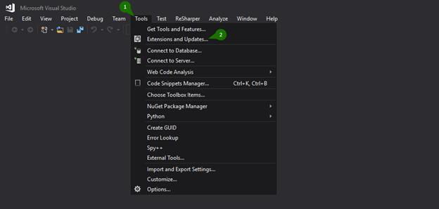
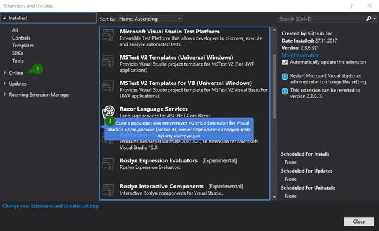
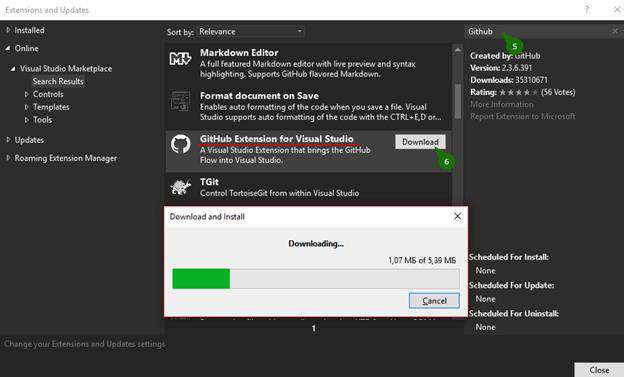
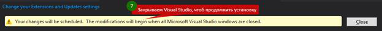
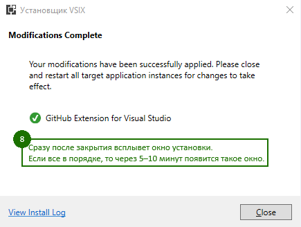
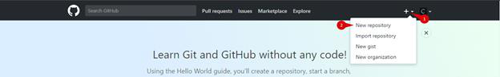
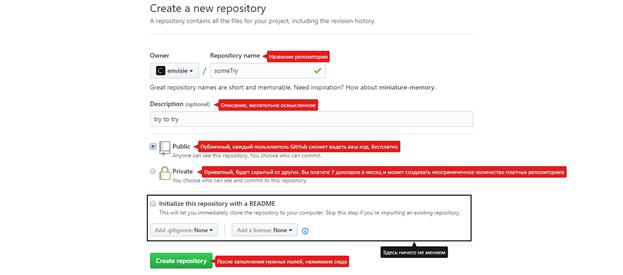
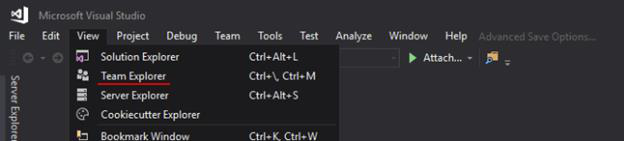
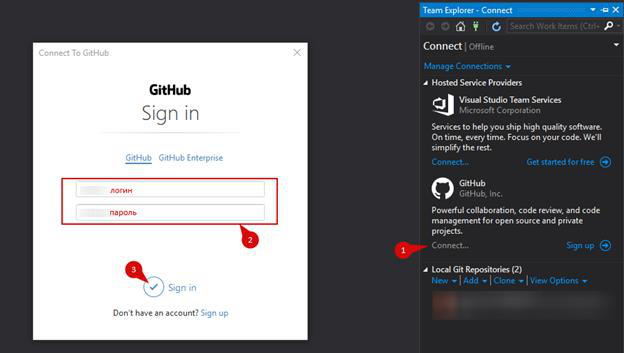
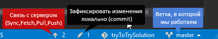

1. Переходим в меню Tools → Extensions and Updates → откроется вкладка Installed → если в расширениях отсутствует «GitHub Extension for Visual Studio» идем дальше, иначе перейдите к пункту следующему пункту инструкции → вкладка Online → ищем в поиске наше расширение → скачиваем и устанавливаем.
Для наглядности:





2. На аккаунте GitHub создаем новый репозиторий. Смотрим:


После, с GitHub копируем ссылку:
3. Открываем Visual Studio → меню View → Team Explorer → в подпункте GitHub нажимаем Connect → вводим учетные данные → Sign in. Скриншоты:


4. Создаем какое-то решение или заходим в существующее и добавляем в систему контроля версий. Для этого нажимаем правой кнопкой мыши на решении (на проекте такого пункта нет) и выбираем “Add Solution to Source Control”:
5. Нажимаем на стрелку внизу, и мы попадем в меню. В нем вставляем ссылку на репозиторий созданий ранее:
6. Если репозиторий пустой все пройдет как надо. В моем случае там уже лежит один проект созданий специально чтоб вызвать ошибку. Он не имеет с этим ничего общего, даже файлы разные.
Выходов из ситуации несколько, я рассмотрю только один из них — создание новой ветки [другой путь разработки, тестовый полигон. По умолчанию установлена ветка “master”] в репозитории для этого делаем следующее:
7. Может возникнуть вопрос – Что значат другие иконки?
Ответ:
Карандаш для того чтоб фиксировать изменения локально (commit). Используйте когда есть что сохранить, то есть код или файлы изменились.
Все остальные тоже играют важную роль:

· Применение их мы уже рассмотрели, но для лучшей наглядности еще раз(коротко):
Создали решение с каким-то проектом→добавили в git→зафиксировали изменение (commit – иконка карандаша)→если есть проблемы поправляем по ситуации(код изменили[статья Алексея] либо новую ветвь создали[смотри пред. пункт], назад по истории сохранений (коммитов) вернулись[след. пункт], либо спросить на toster.ru или stackoverflow.com)→проект на GitHub;
· Об списке коммитов (истории сохранений)